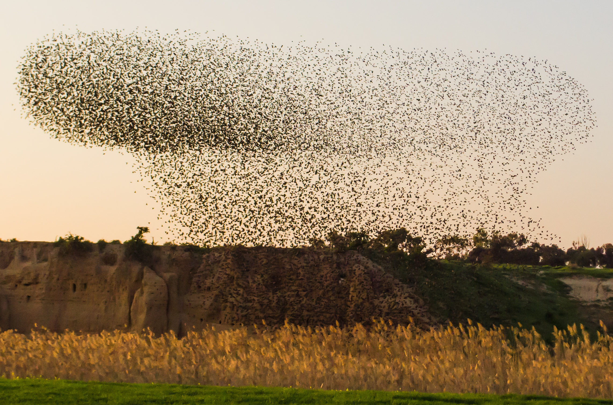
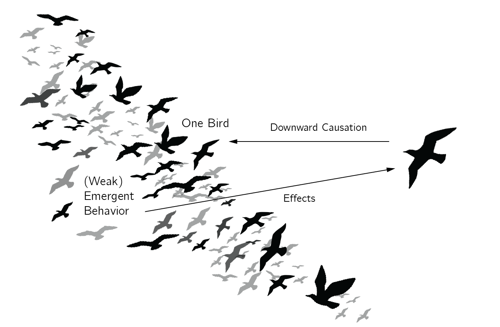
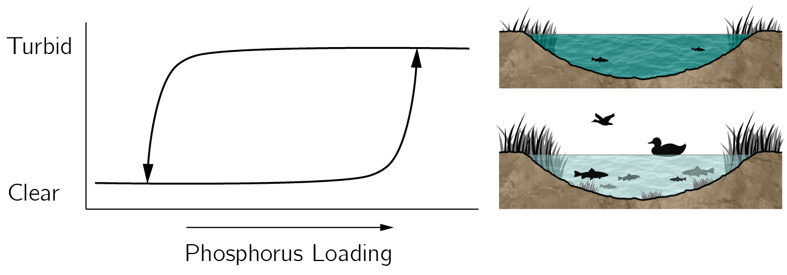

1 はじめに
1.1 複雑系とは何か
人生における物事のなかには単純なものもある。ブロックを押せば、それは動く。より強く押せばより速く動き、押すのをやめれば摩擦によって動きは止まる。蛇口をひねれば水が流れ出す。さらにひねれば流れは速くなり、閉めれば止まる。このような因果関係は明快であり、おおむね線形である。しかし、心理学においてこのような関係はまれである。恐怖を例に取ってみよう。恐怖刺激——たとえば吠える犬——は、恐怖と逃走を引き起こすこともあれば、怒りと攻撃を引き起こすこともある。 その刺激が恐ろしいものとして知覚されるかどうかは、文脈のわずかな違いに依存するかもしれない。また、逃走反応が恐怖の感情に先行するのか、それともその逆なのかも議論されてきた。恐怖は突然パニック発作へと変わることもある。
こうした難しさは心理学に固有のものではない。物理学、化学、生物学で研究される多くのシステムも、このような複雑な振る舞いを示す (Weaver 1948; Krakauer 2024)。それらは複雑系である。複雑系の定義について完全な合意があるわけではないが (Ladyman, Lambert, and Wiesner 2013; Heylighen 2009)、その核となる側面は以下のように要約できると私は考えている。
複雑系は、原子、分子、細胞、ニューロン、さらには生物個体そのものといった、多数の相互作用する小さな下位システムから構成される。私は下位システムという用語を好む。というのも、下位レベルの要素自体もまた複雑系でありうるからだ。1 下位システム間の相互作用にはさまざまな種類がありうるが、一般に局所的で、速く、非線形である。これらの相互作用が創発的振る舞いを生み出す。創発的な過程は通常、より遅い時間スケールで作動する。後により詳しく論じる典型例が交通渋滞である。車は主に近傍の車に反応し、それが大域的な渋滞パターンを生み出しうる。もう一つの例は磁性であり、これは磁石を構成するどの原子にも存在しない。
一般に、こうしたパターンは自己組織化を通じて創発する。 一例はアリが蟻塚を築くことである。この過程を監督したり指揮したりするアリはいない。むしろ、それは多数のアリの間の局所的な相互作用から創発する。2 これについては sec-ch5n でより詳しく説明するが、完全に閉じたシステムでは自己組織化は起こりえない。自己組織化にはエネルギーが必要である。複雑系における創発的パターンはしばらくの間安定であることもあるが、しばしば突然変化する。したがって、相転移や転換点の研究は複雑系研究の中心をなす。複雑系はまたカオス的な振る舞いを示すこともあり、これは本質的に予測不可能でありうることを意味する。天気はその悪名高い例である。
有名な一例、鳥の群れの挙動（figure fig-ch1-img1）を見てみよう。鳥の群れは空を滑るように移動しながら美しい振り付けを描き、空を旋回・急転回するにつれてその隊形を移り変わらせ、姿を変えていく。sec-ch5n で見るように、群れはよく理解されており、シミュレートするのも容易である。群れは複雑系の基準をすべて満たす (詳細な分析は Parisi 2023 を参照)。鳥は飛ぶのにエネルギーを使うので、群れは開放系である。各々の鳥は自分の局所的な近傍にいる鳥だけに反応する。鳥はおおむね三つの規則に従う。すなわち、近傍の鳥と同じ方向に飛ぼうとし、近傍の鳥に近づいたままでいようとし、そして衝突を避けようとする。これらは速く局所的な相互作用である。インターネットで鳥の群れの動画をいくつか見れば、大域的に組織化された振る舞いが見られるだろう。これは自己組織化の格好の例である。他の鳥に方向転換を命じて指揮する一羽の鳥など明らかに存在しない。 これらの動画でさらに見て取れるのは、たとえば楕円形のような安定なパターンが突然変化しうることである。鳥は方向を変えたり、分裂したりするかもしれない。このような分岐やカタストロフィ（sec-ch3 で説明する）は複雑系に典型的である。また、これらの群れの振る舞いがかなり予測不可能であることも見て取れる。群れ、より一般には群れ（スウォーム）はよく理解されており、コンピュータ上で容易にシミュレートできるが、だからといってこれらのシステムを常に予測できるわけではない。この問題は sec-ch2 でさらに論じる。

同様の例はあらゆる自然科学に見出される。たとえば竜巻は、やはり局所的に相互作用する空気分子から構成される。竜巻は予測不可能で、自己組織化する、大域的な気象現象である。有名な化学の例は、化学振動子であるベロウソフ–ジャボチンスキー反応である (Kuramoto 1984)。この反応はいくつかの化学物質の混合物を含む。反応が進むにつれ、溶液は透明と不透明の間で、あるいは使用する反応物に応じて異なる色の間で、驚くほど色鮮やかな振動を示す。以降の章ではさらに多くの例を見ていく。
心理学における格好の例は脳である。約一千億個のニューロンが、その近傍にある数千個の他のニューロンと相互作用する。コンピュータと比べると、脳は極めてエネルギー効率が高いが、あらゆる開放系と同様、エネルギーを消費する (Attwell and Iadecola 2002 によれば電球一個分に相当する)。 あなたが今読んでいる文字は網膜のニューロンを活性化させ、それが数十億のニューロンにわたる電気的な波のカスケードを引き起こし、どういうわけか、この文章に対するあなたの理解を生み出す (Roberts et al. 2019; Schöner 2020)。どうしてこのようなことが可能なのだろうか。私にとって、これは史上最も魅力的な科学的問いである。私が物理学者ではなく心理学者であることの主たる理由がこれである。私は脳を究極の複雑系とみなしている。
1.2 創発主義
複雑性と還元主義の関係はどのようなものだろうか。還元主義によれば、複雑な現象は、それを構成する個々の部分や要素の相互作用へと還元することによって説明できる。ここから二つの問いが生じる。一つは弱い創発に、もう一つは強い創発に関わるものである。
第一の問いは、なぜ物理学以外の分野で科学的研究を行うことが可能なのか、というものである。というのも、究極的には化学、生物学、そして心理学までもが、根本的には素粒子間の相互作用に関わっているからである。複雑な分子、細胞、ニューロン、あるいはより高次の人間の認知について考え始める前に、まず物理学の研究を完成させるべきではないのだろうか。
フィリップ・アンダーソンの著名な論文「More Is Different（多は異なり）」は、この問いへの答えが断固たるノーであることを説得的に論じている (Anderson 1972)。 還元主義には多くの利点があるが、どういうわけか、ニューロン間や人間の間の相互作用を研究するとき、量子力学の法則は無関係になる。私は、複雑系における創発が科学の還元主義的な見方と矛盾するとは考えていない (Bechtel and Abrahamsen 2005)。原子やニューロンのような創発現象が、二元論者になることなく、さらに高次の記述レベルにおいて、新たな高次の現象を説明するための下位の実体として用いられうるのはなぜか——これを説明するのが複雑系理論だと言えるだろう。
この創発という根本原理こそが、心理学のような分野が、他とは区別される独立した科学の一領域として存在することを可能にしている (Fodor 1974)。 レベルという概念は、ハーバート・サイモンの「複雑性の建築（アーキテクチャ）」の中心をなす。そこでは各下位システム自体が、より小さな部分から構成される複雑な構造であり、このパターンが複数のレベルで繰り返される。3 サイモンによれば、こうした入れ子構造は、頑健で適応的であるがゆえに、自然界にも人工システムにも遍在している。このレベル概念の詳細な議論については Wimsatt (1994) を参照されたい。
第二の、より論争的な問いは、創発現象が独立した因果的役割をもつのか（強い創発）、それとも主として記述的な価値をもつにすぎないのか（弱い創発）、というものである。強い創発はしばしば下方因果と結び付けられる (Chalmers 2006; Flack 2017; Kim 2006)。
私はこれを群れの例と結び付けるのを好む。鳥の群れは創発現象であり、個々の鳥の振る舞いを決定するわけではない。鳥はただ局所的な規則に従っているだけである。群れの形成は弱い創発の一例である。しかし、捕食者が現れると事態は変わる。捕食者は、個々の鳥の振る舞いによってではなく、獲物の群れによって混乱させられる。したがって群れは何らかの因果的な力をもつ。さらに、鳥は捕食者の動きに反応する。これは下方因果の一例、ひいては強い創発の一例とみなしうるだろう（figure fig-ch1-img4）。近年の研究は、こうした因果的創発の効果を定量化しようと試みている (たとえば Hoel, Albantakis, and Tononi 2013 を参照)。

私たちの心は、意識的な思考、自己意識、推論能力、自然言語の理解、情動、態度を包含するものであり、単なる副産物ではなく、神経活動の複雑なパターンへと単純に還元することはできない。私の見解では、意識のようなこうした心的構成体は、それ自身の因果的影響力をもっており、これは心理学がそれ自体で一つの科学的分野として立つ理由の一つである。
もちろん、心と脳の関係は心理学で最も議論の多い主題の一つである。神経還元主義的な見方は、高次認知の説明 (Schwartz et al. 2016) においても、心理的障害の説明 (批判的な検討としては Borsboom, Cramer, and Kalis 2019 を参照) においても、心理学の分野で人気がある。
1.3 心理学という分野
自然科学における複雑系の研究は極めて技術的である。私は複雑系という分野を、経験的パラダイム、数理モデル、および技法から成る道具箱と考えるのを好む (Grauwin et al. 2012)。モデルはしばしば差分方程式や微分方程式の形で定式化され、たとえば分岐解析にかけられる。これらは複雑系の振る舞いを記述する数学的な方法である。加えて、通常はコンピュータ・シミュレーションの形をとる高度な数値解析が標準的なアプローチである。しかし、心理学の教育課程には通常、代数学、微積分学、プログラミングの科目が含まれていない。多くの心理学者は、複雑系理論の道具箱を応用するための基礎的な知識や技能を欠いている。これらは通常、心理学のカリキュラムの一部ではないからである。複雑系研究は、心理学者や社会科学者にとってはあまりに複雑すぎるように思われる。本書の一つの目的は、心理学者にこの技術的な道具箱への最初の入門を提供することである。
残念ながら、これらの道具を私たちの分野に応用するにはさらなる困難がある。第一に、私たちの研究対象は鳥の群れや竜巻よりもはるかに複雑であり、驚くべき振る舞いを示す。彼らは科学を行うことができる！ 実験が退屈だと感じれば実験室から歩き去ることもできる。レーザーではこのようなことは起こらない。第二に、私たちは研究対象に対する実験の倫理的制約に対処しなければならない。自然科学で非常に成功したアプローチである「分解する」ことは、私たちにはできない。最後に、測定の問題がある (Lumsden 1976; Michell 1999)。
私たちは、自然科学、とりわけ物理学がいかに信じがたいほど精密であるかを忘れがちである。1985年、リチャード・ファインマンは、電子の磁気モーメントの大きさを計算する精度が、ロサンゼルスからニューヨークまでの3,000マイルを超える距離を、人間の髪の毛一本の幅の精度で測定することに相当する、と有名な主張をした。私はそれを衝撃的だと思う。あまり有名ではないが、私に言わせれば、心理学者はまだ大陸を「発見」しておらず、ニューヨークがどこにあるのかも見当がつかない。私たちの測定器具は一般に、信頼性と妥当性という初歩的な要件すら満たしておらず、再現の失敗に悩まされ、理論はしばしば不正確である (Eronen and Bringmann 2021)。
これはすべて不運なことである。というのも、私たちの脳だけでなく、私たちの分野のあらゆる研究対象が複雑系の特徴をもっているように思われるからである。社会システムは、文化や経済システムといった創発現象を生み出すために相互作用する諸個人から成る複雑系である。おそらく私たちが知る最も複雑なシステムである人間の脳は、家族、教育、経済、文化といった、さまざまな階層をなす非常に複雑な社会システムのなかに埋め込まれている。私たちには道具箱が必要なのである！
こうした問題すべてにもかかわらず、私は悲観していない。行動科学・社会科学における具体的な進歩は可能だと私は信じている。これらの科学がまったく成功していないわけではない。私たちは人々の態度、嗜癖行動、認知、そして彼らが相互作用する社会システムについて多くのことを知っている。私たちは高度な実験計画を用いてこれらをある程度の成功をもって研究し、そしてほとんどあらゆる事柄について（主に言語的な）理論を発展させてきた。
私たちには選択の余地もない。私たちは進歩しなければならない。個人的に私は、一方では行動科学・社会科学を科学として高めようとする私たちの奮闘と、他方では成果をあげることへの社会からの莫大な期待との間に、強い緊張を感じている。気候変動、人口過剰、戦争と暴力、貧困、不平等、感染症、嗜癖——ほんの数例を挙げるだけでも——といった、私たちの最も差し迫った地球規模の問題は、行動科学・社会科学における飛躍的な進展なしには解決不可能である。
社会的文脈のなかにある人間の心が驚くほど複雑なシステムであるという認識は、機会をも提供する。明らかな違いにもかかわらず、複雑系は注目すべき類似性を示す。複雑系理論の先駆けである一般システム理論 (Bertalanffy 1969) は、すべてのシステムが重要な特徴を共有していると明示的に仮定していた。 これが、心理学を超えた諸分野に由来するモデリングの例を本書で数多く提示する主たる理由である。
私にとって着想を与えてくれる一例は、浅い湖の研究に由来する (Scheffer 2004)。浅い湖は、澄んだ水と多様な魚類・植物の個体群をもつ「健全な」状態にあるか、あるいは「不健全な」濁った状態にあるかのいずれかである傾向がある。私は、濁った状態にあるこうした複雑な湖システムを、うつ病に苦しむ人にたとえるのを好む。この濁った状態は通常、突然生じる。臨界的なリン負荷が存在し、そこでシステムは健全な状態から、藻類とコイ類による完全な支配へと転換する。このタイプの転移に典型的なのはヒステリシス効果である（figure fig-ch1-img2）。これは、澄んだ状態から濁った状態への転換点と、濁った状態から澄んだ状態への転換点とが、同じリン負荷では生じないことを意味する。澄んだ水への転換点は、はるかに低いリン負荷でしか生じない。これらの転換点は非常に離れているため、原因であるリン負荷を減らすことが実行可能な選択肢とならない場合もある。もちろん、補助的な酸素供給、化学物質、日除け、肉食魚の放流など、あらゆる種類の介入が研究されてきた。これらの介入はあまり成功しなかったか、特定の場合にしか成功しなかった。それらがある程度の成功を収めたという事実は、大うつ病性障害の治療に用いられるものなど、臨床的介入の部分的な有効性を思い起こさせる。

1980年代に飛躍的な進展があった。すべての魚を取り除くことが非常に効果的な介入であることが判明したのである。生態学者たちは冬の間、網でほとんどすべての魚を捕獲した。春になると、水生植物、他の魚種、そして澄んだ水を特徴とする新たな健全な平衡が現れた。この新たな状態はしばしば長期間にわたって安定である。注目すべきことに、原因であるリン負荷の分析は解決策の一部ではなかった。すなわち、リン負荷の増加が濁った状態への転移の主因であるにもかかわらず、リン負荷を減少させてもシステムは澄んだ状態へと逆戻りしない。 このことがうつ病性障害についての私たちの考え方にとって何を意味するかは、第 sec-ch5n 章と第 sec-ch6 章で論じる。
私は、複雑系についての三つの重要な観察に基づき、いくぶん楽観的でありうる三つの具体的な理由を論じよう。第一の重要な観察は単純化に関わるものであり、第二は複雑系が少数の安定状態によって特徴づけられる傾向に関わるものであり、そして第三は、すべての複雑系が何らかのネットワークとして記述できるように思われる、というものである。おそらく単純化が最も重要である。
1.4 単純化の技法
魅力的で示唆に富む一例が交通渋滞である。それは、驚くほど複雑な脳をもつ多数の人々が、先端技術を満載した現代の車に乗っている状況から成る。このような複雑な現象をモデル化するにはどこから始めればよいのか。その答えは驚くべきものである。どうやら私たちは、車に乗った人々を、車線上の単純なブロックへと還元できるらしい。すなわち、人工の車の前方に空間があれば加速し、前の車に近づきすぎれば減速する、というものである。それより下位のモデリングのレベルはすべて無視される。これは鳥の群れよりもさらに単純である。
この場合についてコンピュータ・シミュレーションを組むのは難しくない。私は、ある例をしばらくいじって遊んでみることを勧める。4 交通渋滞が容易に形成されうること、そして予想外の性質をもつことを見て取るのに、それほど時間はかからない。すなわち、車は前進しているのに、交通渋滞は後方へと動くのである！ もう一つの興味深い観察は、速度のばらつきが渋滞を引き起こすことである。しかしそのばらつきはどの車にも存在しない。ばらつきと渋滞は、より高次の記述レベルにおける性質である。このシミュレーションを用いれば、さまざまなタイプの交通状況や介入を研究できる。この種のシミュレーションは、高速道路や道路の設計と最適化に非常に有用であることが判明している (Barceló 2010; Treiber, Hennecke, and Helbing 2000)。実は、交通渋滞をモデル化する仕方には異なるものがある。Jusup et al. (2022) は、流体力学モデル、運動論的モデル、追従モデル、結合写像格子モデル、セルオートマトンモデルを区別している。これらはいずれも、実際の交通渋滞の多くの現象を再現する。
大域的な振る舞いに関係するのは高次の性質だけである。科学という技の大部分は、単純化の適切なレベルを見つけることにある。喫煙を研究しているとしよう。ニコチンの血管への影響をモデル化するのか、タバコを持った手が口から灰皿へと動く様子をモデル化するのか、それとも一日に吸うタバコの本数をモデル化するのか。マーケティングの効果や喫煙者の社会的ネットワークを含めるのか。
何が関係し、何を無視できるのか。特定の事例について確定的な答えを与えることは難しい場合もある。それでも一般的に言えば、考慮すべき下位のレベルには限界がある。交通渋滞を調べる際には、個人や車両のある種の特徴を組み込む必要があるが、ニューロンの発火、DNAの複製、あるいは車のバッテリーの精緻な仕組みといった話題に深入りすることは無関係になる。そのモデリングのレベルでは、交通渋滞の説明を変えるような関係する情報は存在しない。
交通の例は、極端な単純化が時に可能であり、また必要であることを示している。しかし、単純化の適切なレベルを見つけることは決して単純な作業ではない。Borsboom et al. (2021) において、私たちは五つの段階から成る理論構築方法論（TCM）を提案している。
- 説明の標的となる経験的現象を同定する。
- これらの現象を説明すると想定される一連の理論的原理を定式化する。
- この一連の原理、すなわちプロト理論を用いて、形式的モデル——説明原理を符号化する一連のモデル方程式——を構築する。
- モデルの説明的妥当性を分析する。すなわち、それが段階1で同定された現象を実際に再現するかどうかを分析する。
- 説明原理が十分に倹約的で、実質的にもっともらしいかどうかを判定する。
この論文はこれらの段階を詳しく説明し、一例として一般知能の相利共生モデルを提示している。これは本書の sec-ch6 で説明する。
私はこの段階のリストにいくつかの注釈を加えたい。まず第一に、段階1が鍵である。説明すべき現象を定義するにあたって精確であることが決定的に重要である。現象はデータと同じではない。データは特定の経験的パターン（具体的なデータセット）であるのに対し、現象は一般的な経験的パターン、すなわち世界の安定的で一般的な特徴である (Haig 2014)。上で述べたように、行動科学・社会科学においては、どのデータパターンが信頼できるのかが常に明らかであるわけではない。過去十年の間に、再現性の危機は心理学の方法における革命をもたらしたが、多くの結果は潜在的に偏った方法を用いて収集されている。一つの問題は出版バイアスである。すなわち、否定的な結果は、仮説を支持する結果よりも依然として出版されにくい。他の場合には、異なる研究の結果が互いに矛盾し、メタ分析はせいぜい弱い効果しか示さない。
第二の観察は、これらの段階を踏むことが線形の過程ではない、ということである。モデルを開発しているうちに、現象のリストに何か重要な情報が欠けていることに気づくことがしばしばある。たとえば、嗜癖をモデル化しているとして、突然、人々が使用する嗜癖性物質の組み合わせについての情報が必要になるかもしれない。そしてそのような単純な問いにはしばしば答えることが不可能である。容易に手に入るだろうと予想していた情報を求めて何日も文献を探した挙句、多くの基本的な事柄が単に知られていないことを見出すこともある。
第三の観察は、形式的モデリングが大部分は類推的推論の問題である、ということである。そのようなモデルをどう構築するかを理解するには、複雑系モデルの多くの例を研究しなければならない。実際、私自身の研究では、物理学や生物学で開発された確立されたモデルをベースモデルとしてしばしば用いる。その多くの例を後で見ることになる。
第四に、よいモデルは現象を組み込むのではなく、基本原理から説明する。組み込むというのは、現象がモデルの仮定であってはならない、という意味である。一例は、車の速度のばらつきが交通渋滞を引き起こす、と述べるモデルであろう。そのようなモデルは他の事柄を説明しうるが、速度のばらつきの役割は説明できない。というのも、その効果は仮定の一部だからである。そのような仮定を置くモデルは現象論的モデルと呼ばれる。私たちは複雑系の現象論的モデルの例も、また説明モデルの例も見ることになる。後者は基本原理に基づくものである。
第五に、複雑系アプローチの隠喩的な使用は、具体的な形式的モデルを用いることによって避けるべきである、というのが私の信念である (Dongen et al. 2024)。最高水準の科学的厳密さを目指すことが決定的に重要である。複雑系研究のために特別な、より寛容な方法論的規則が存在するわけではない (van der Maas 1995)。
1.5 少数の平衡状態
第一の重要な観察は、複雑系が単純化できるということであった。第二は、複雑系が少数の平衡状態によって特徴づけられる傾向にある、ということである。重要な一例は水である。水は通常、固体、液体、気体のいずれかの状態で存在する（プラズマ状態は脇に置くとして）。これらは、温度と圧力の広い範囲にわたって安定な状態である。
生物学の一例は、蝶のライフステージ（卵、幼虫、蛹、成虫）である。短い移行期間を除けば、これらの昆虫はこの四つの比較的安定した状態のいずれかにある。もう一つの例は馬であり、静止しているか、常歩、速歩、あるいは襲歩をしているかのいずれかである。私は、複雑系の平衡状態を同定することから常に始めなければならないと確信している。これは心理学や社会科学への応用にも当てはまる。双極性障害は二つの安定状態（うつ状態と躁状態）によって特徴づけられるように思われる。嗜癖の場合には、三つの状態——非使用、娯楽的使用、および常用——を考えることができる (Epskamp et al. 2022)。同様に、恋に落ちる過程、微積分の理解、睡眠、そして過激化における諸段階を同定することもできよう。
離散的な段階を同定することは、一見したよりも難しいことが判明する。 より多くの下位段階を考え出すことがしばしば可能である。たとえば馬の運動の場合、人々は速歩をさらに三つの形態（作業速歩、中間速歩、収縮速歩）に細分する傾向がある。多量飲酒の場合にも細分がなされる (Leggio et al. 2009)。現代の機械学習技法（自動クラスタリング）や、より伝統的な手段（有限混合モデル、潜在クラス分析）を用いて、そのような分類を客観的な統計的方法で支えることが可能である。これについては sec-Multimodality でさらに述べる。
さらなる複雑さは、平衡状態がさまざまな形をとる、ということである。最も単純な形は固定点または点アトラクタから成り、その一例は谷間に置かれたボールである。乱れのない条件では、ボールは丘の頂上に静止していることもありうるが、これは不安定な平衡である。平衡状態はまた、リミットサイクルすなわち振動子でもありうる。たとえば、二つの振り子は同位相で揺れることも逆位相で揺れることもある。ストレンジアトラクタを考えると、事態はさらに奇妙になる。ストレンジアトラクタはしばしばフラクタルの形をとる。これは次の二つの章でより詳しく説明する。
最後に、多くの複雑系、とりわけ生きたシステムは、絶えず摂動されているために決して平衡に達しない、とも論じられてきた (Groot and Mazur 2013)。 しかし少なくとも一部の複雑な心理システムは、長期にわたって明らかに安定である。残念ながら、これは多くの心理的障害に当てはまる。対照的に、世界、心理科学、そして複雑系研究についての私の理解は、この本を（一度）書き上げるのにちょうど十分な安定性をもつ、絶えず摂動される非平衡系として記述したほうがよい。
1.6 ネットワークはいたるところにある
心理学に複雑系モデリングを用いようとする試みにとって大いに関係する第三の重要な観察は、複雑系が相互作用する下位要素から成るがゆえに、ネットワークである、ということである。私にとって、ネットワークは現代科学において最も学際的な研究主題である。磁石、生態系、脳、インターネット、そして社会ネットワークが格好の例である。
心理学における二つの応用がよく知られている。第一はニューラルネットワークの研究であり、七十年前に始まり、過去十年の人工知能（AI）革命の主たる基盤となった。sec-ch5n でニューラルネットワークについて論じる。第二は社会ネットワークであり、最も単純な例は二者間の相互作用である。フェイスブックのようなソーシャルメディアはその悪名高い例である。鍵となる考えは、弱い紐帯と強い紐帯、中心的なハブ、そしてホモフィリー（同類選好）といった概念に関わるものであり、これらは第6章と第7章で論じる。社会ネットワークデータの分析は刺激的な研究領域である (Scott 2011)。それは、社会的実体がどのように結び付いているか、そしてこれらの結び付きがさまざまな帰結や振る舞いにどのように影響するかを理解することに焦点を当てる。ノード（たとえば個人、組織、コミュニティ）間の結び付きは、友情、コミュニケーション、協働、情報の流れ、あるいはその他あらゆる形態の社会的相互作用といった、異なる次元に基づきうる。これらの相互作用は時間とともに変化することもあり、これは社会ネットワークダイナミクスにおいて研究される (Snijders 2001)。5
sec-ch6 は、私がネットワーク心理学と呼ぶ、ネットワークの新規な用法に焦点を当てる。これはニューラルネットワークと社会ネットワークの間にある記述レベルである。それは、知能、態度、そして心理的障害を個人のレベルでモデル化することを含む。たとえば知能は、協働する認知機能の生態系としてモデル化される。これは、一般知能が単一の基底的な源である \(g\) に由来するという標準的な見方とは根本的に異なる。一般知能の相利共生モデル (van der Maas et al. 2006) においては、IQ検査バッテリーの下位検査の得点間で観察される正の相関は、作業記憶、空間認知、言語といった認知的下位システム間の、累積的で相互的な発達的相互作用に由来する。
別の例として、うつ病の症状である睡眠問題は、疲労の増大や集中困難を引き起こしうる。これがひいては、日常の課題をこなし、社会活動に従事する能力に影響を及ぼしうる。そしてこれが再び睡眠の質の低下へと逆戻りし、各々の症状が他の症状を強化する循環的なパターンを生み出す。この精神障害についての新たな見方は私たちの研究グループから生まれ、今では非常に人気がある (Robinaugh et al. 2020)。その理由の一つは、このネットワーク・アプローチを調べるための多くの統計的技法が開発されてきたことである。
この研究の最新の系譜は、心理的ネットワークと社会ネットワークの統合的研究である (van der Maas, Dalege, and Waldorp 2020)。sec-ch7 は、態度についての心理的ネットワークモデルが、意見変化についての社会ネットワークのなかに入れ子になったモデルを扱う。このモデルは分極化の新たな説明を提供する。
1.7 複雑系を調べるための方法
複雑系はさまざまな分野でさまざまな仕方で研究されている。私たちは、複雑系モデルにおける創発を調べるためにコンピュータ・シミュレーションを用い、その予測不可能な振る舞いを分析し、関与する転換点のタイプを分類し、複雑系の全体的な振る舞いを記述する方程式を導き、時系列データを収集・分析し、あるいはシステムのレジリエンスを検証するために実験的にシステムを撹乱する。Sayama (2015) に倣い、私はモデルと方法を二つの群に分類する。すなわち、少数の変数をもつシステムのためのものと、多数の変数をもつシステムのためのものである。
第一のカテゴリーは非線形力学系理論と呼ばれ、カオス理論やカタストロフィ理論（分岐理論）を包含する。第二のカテゴリーは、エージェントベースモデリングやネットワーク理論といった、多要素システムを研究するための道具を含む。第一のカテゴリーは、定義上多数の変数をもつ複雑系には無関係だと思われるかもしれない。しかし、複雑系の大域的な振る舞いは、しばしば少数の変数、多くの場合はたった一つの変数で記述でき、それが高度に非線形な仕方で振る舞うことが見出されている。
この分類は本書の構成に反映されている。続く三つの章は少数の変数をもつシステムに充てられている。すなわち、sec-ch2 はカオス理論を論じ、sec-ch3 はカタストロフィ理論と分岐理論で研究される突然の転移を扱い、そして sec-ch4n は力学系のモデリングへの入門を提供する。
本書の後半では、多数の変数をもつシステムを研究するための道具、とりわけ sec-ch5n における自己組織化のエージェントベースモデリング、sec-ch6 におけるネットワークモデリング、そして sec-ch7 における両者の心理社会システムへの応用へと焦点を移す。
1.8 その他の仕事と資料
複雑系アプローチはしばしば次なる新しいものとして紹介されてきたが、そのような時代は過ぎ去った。心理学においてさえ、それはもはや新しいアプローチとはみなしえない。多くの異なる研究グループが、心理学のあらゆる領域で複雑系研究の道具箱を用いてきた。本書は多くの例を挙げる。複雑系研究とみなしうるが、その見出しの下では出版されてこなかった多くの仕事がなされてきた、とさえ論じることができよう。たとえば、心理過程のニューラルネットワークモデルの大半は複雑系モデルである。というのも、それらは神経単位の相互作用の創発的な計算論的性質を調べるからである。これは数理心理学の多くの仕事にも当てはまる。たとえば、力学系を研究するために微分方程式が用いられる場合である。複雑系研究における古い仕事は、しばしば非線形力学系に言及して出版されてきた。他の関連するアプローチは、計算社会科学とエージェントベースモデリングである。
今日、複雑性研究のための多くの学際的センターないしハブが存在する。ニューメキシコ州サンタフェにあるサンタフェ研究所は、複雑性科学の先駆者である。そのサマースクールは強く推奨される。他の例は、オーストリアのウィーンにある複雑性科学ハブや、イングランドのウォーリック大学にある複雑性科学センターである。私自身の国であるオランダには、少なくとも四つのこうしたセンターがある。私はアムステルダムの高等研究所の主任研究員であり、またサンタフェ研究所の外部教員でもある。
複雑系に関する過去および現在進行中のすべての仕事について均衡のとれた展望を与えることは不可能である。私は当然ながら自分自身の仕事や貢献にいくぶん偏っているが、関係する仕事を指摘するよう最善を尽くしている。やや技術的でないアプローチによる複雑系研究への一般的な資料としては、Mitchell (2009) の本を推薦する。もう少し数学的なアプローチには、Serra and Zanarini (1990)、Sayama (2015)、Thurner, Klimek, and Hanel (2018) の本を推薦する。心理学における仕事の概観は Guastello, Koopmans, and Pincus (2008) と Port and Gelder (1995) によって提供されている。他の優れた本は Heath (2000) と Kelso (1995) によって書かれている。
1.9 演習問題
https://www.traffic-simulation.de/ を訪れよ。交通渋滞はどの方向に動くか。ラウンドアバウトについて——悪い優先規則とは何か。交通渋滞は、臨界パラメータの同じ値で現れたり消えたりするか。たとえば環状道路を取り上げ、Politeness（譲り合い）を変化させてみよ。(*)
異なる安定した段階や状態が区別される心理過程や理論について、自分自身の例を挙げよ。(*)
意識は下方因果の過程とみなしうるだろうか。自分の答えを説明せよ。(**)
Simon (1962) が指摘したように、かつて原子は素粒子と考えられていたが、現代の原子核物理学においては、原子自体が複雑系である。↩︎
創発は対称性の破れの帰結であるとも論じられている (Krakauer 2023)。対称性の破れは、システムが対称的な状態から非対称的な状態へと移行し、その結果として異なる性質や振る舞いが創発するときに生じる。対称性の破れの一例は雪の結晶の形成に見られる。水の分子構造ゆえに、氷の結晶は当初、対称的な六角形をしている。しかし、結晶が成長を続けるにつれ、温度や湿度といった環境要因がその成長パターンに影響を及ぼす。これらの要因のわずかな変動が初期の対称性を破り、多様で美しい雪の結晶構造の形成につながる。↩︎
この考えを視覚的に例示したものとして figure fig-ch6-extra を参照。↩︎
よい例は https://www.traffic-simulation.de/ である。↩︎
Statnet.org は、社会ネットワーク分析のための R パッケージの概観を提供している。↩︎